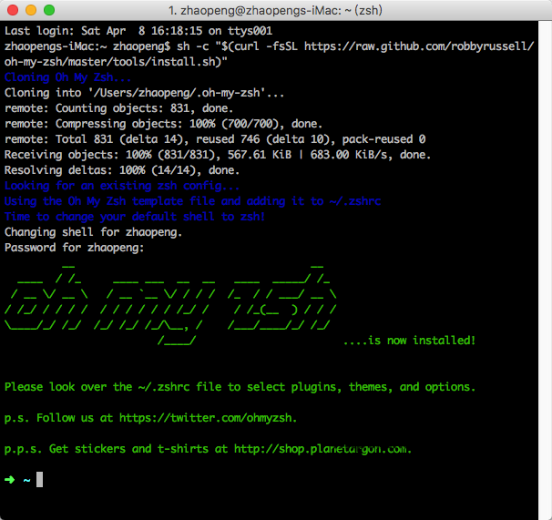
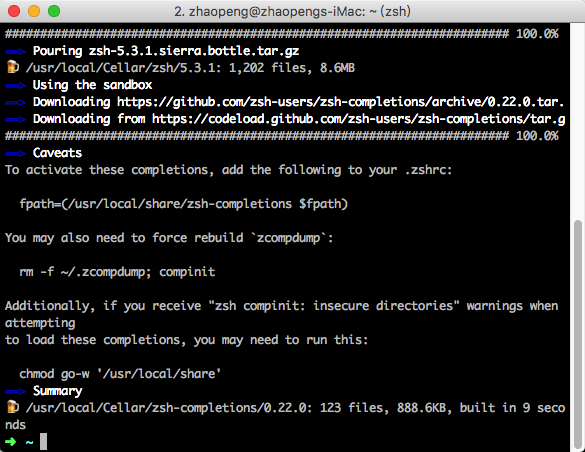
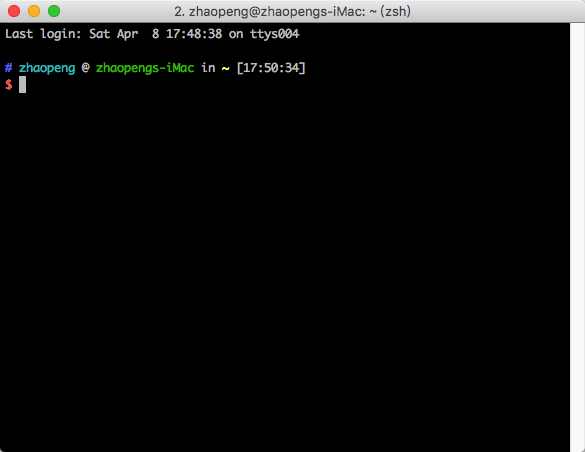

zsh
zsh 是 shell 中的极品,让shell 的使用更加的便利,强大,必装软件.
我们将安装 zsh ，其拓展功能和主题将由 oh-my-zsh 提供。其中Env.sh 文件用于维护别名（aliases），输出（exports）和路径改变（path changes）等等，以免影响 ~/.zshrc。
官网
安装

使用 Homebrew 完成 zsh 和 zsh completions 的安装
brew install zsh zsh-completions

安装完成之后,可以根据提醒进行一些操作.
安装 oh-my-zsh 让 zsh 获得拓展功能和主题
curl -L https://github.com/robbyrussell/oh-my-zsh/raw/master/tools/install.sh | sh
创建一个配置文件
cd ~
mkdir -p ~/Projects/config
cd Projects/config
touch env.sh
用文本编辑器或 vi/code 打开 .zshrc 进行以下编辑:
ZSH_THEME=ys
plugins=(git colored-man colorize github pip python brew osx zsh-syntax-highlighting)
alias zshconfig="code ~/.zshrc"
alias envconfig="code ~/Projects/config/env.sh"
用文本编辑器或 vi/code 打开 ~/Projects/config/env.sh 进行以下编辑:
#!/bin/zsh
# PATH
export PATH="/usr/local/bin:/usr/bin:/bin:/usr/sbin:/sbin"
export EDITOR='code -w'
# export PYTHONPATH=$PYTHONPATH
# export MANPATH="/usr/local/man:$MANPATH"
# Owner
export USER_NAME="YOUR NAME"
# FileSearch
function f() { find . -iname "*$1*" ${@:2} }
function r() { grep "$1" ${@:2} -R . }
#mkdir and cd
function mkcd() { mkdir -p "$@" && cd "$_"; }
# Aliases
最终会是这样

注：
如果是新增环境变量或者是修改环境变量的值，都需要 source 一下才能立即生效。
如果是删除一个环境变量，必须输入 exit 以 logout 当前 shell ，然后再重新打开一个新的 shell 并 login 才能生效。
我常用的文本编辑器的是 vscode, 等安装了 vscode , 我会变 vi 改成 code.